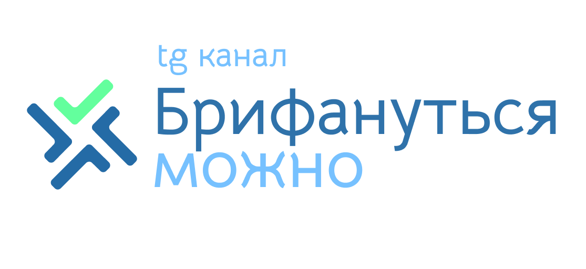

Reach & Budget Calculator
Как пользоваться калькулятором
Выберите аудиторию, задайте достижимый охват и CPM, затем сравните бюджетные сценарии. Подробные пояснения показателей находятся ниже расчетов.
Параметры кампании
—Как выбрать достижимый охват?
Ограниченный: одна площадка, узкий инвентарь, жесткие таргетинги. Средний: несколько площадок или форматов. Высокий: широкий digital-сплит. Максимальный: digital и массовые офлайн-каналы. Диапазоны взяты из настроек исходной модели и не являются рыночными нормативами.
Что означают CPM и шаг бюджета?
CPM: стоимость 1 000 показов. Шаг бюджета: разница между соседними сценариями. Например, 0,1 млн ₽ = 100 000 ₽. Меньший шаг позволяет точнее увидеть переход между зонами насыщения.
Настройки зон насыщения · что означают пороги?
По умолчанию: до 50% максимально достижимого охвата бюджет активно приводит новую аудиторию; от 50% до 80% прирост замедляется; от 80% дополнительные вложения дают сравнительно мало нового охвата. Это параметры авторской модели, их можно менять.
Результаты расчета
Границы зон определяются по заданному шагу бюджета.
Кривая насыщения охвата
Как читать график?
Охват (зеленая линия). Показывает, какую долю всей целевой аудитории можно охватить при каждом уровне бюджета. Горизонтальный пунктир обозначает максимально достижимый Reach. Чем более пологой становится кривая, тем меньше новых людей приносит дополнительный бюджет.
Прирост Reach, п.п. (синяя линия). Включите галочку «Показать прирост охвата, п.п.». Линия покажет, на сколько процентных пунктов увеличивается охват при переходе от предыдущего бюджетного сценария к следующему. Значения считываются по правой вертикальной шкале, а не по левой шкале общего Reach.
Пример. Если при бюджете 1 млн ₽ охват составляет 30% ЦА, а при 2 млн ₽ — 42%, прирост равен 12 п.п. Это не рост на 12% относительно предыдущего охвата. Чем ниже синяя линия при одинаковом шаге бюджета, тем меньше дополнительный охват от следующего вложения. Сравнивайте прирост с ценой +1 п.п. в таблице сценариев.
Границы насыщения. Вертикальные пунктирные линии отмечают первый рассчитанный бюджетный сценарий, достигший порога «Начало насыщения» или «Низкая отдача». При изменении шага бюджета их положение может измениться.
Сценарии бюджета
Как читать показатели таблицы?
Частота: среднее число показов на охваченного пользователя. Cost per Unique: бюджет на одного уникально охваченного человека. Прирост Reach: изменение охвата относительно предыдущего сценария, в п.п. Цена +1 п.п.: стоимость дополнительного процентного пункта охвата в млн ₽.
| Зона | Бюджет, ₽ | Показы | Reach, % ЦА | Reach, чел. | Частота | Cost per Unique, ₽ | Прирост Reach, п.п. | Цена +1 п.п., млн ₽ |
|---|
Как читать результаты
Охват еще далек от предела, и каждый следующий бюджетный шаг относительно эффективно расширяет аудиторию. Показана последняя рассчитанная точка в этой зоне.
Новые показы все чаще приходятся на уже охваченных пользователей. Частота растет, а прирост уникального Reach замедляется. Показана первая точка зоны.
Большая часть доступной по модели аудитории уже охвачена. Дополнительный бюджет преимущественно увеличивает частоту. Показана первая точка зоны.
О модели
Формулы
Показы = Бюджет / CPM × 1000.
Max Reach (чел.) = размер ЦА × Max Reach (%).
Reach (чел.) = Max Reach (чел.) × (1 − exp(−Показы / Max Reach (чел.))).
Частота = Показы / Reach (чел.).
Cost per Unique = Бюджет / Reach (чел.).
Зоны насыщения
Оптимально: ниже 50% Max Reach; Сигнал: от 50% до 80%; Неэффективно: от 80%. Пороги можно изменить в настройках.